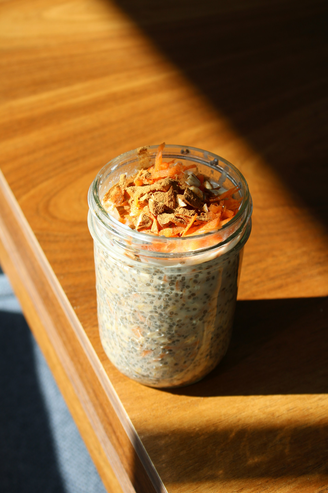

Overnight Oats
Home

Description
This is the recipe for the busy folk. This single breakfast was my staple through my main office working days.
This is also highly customizable so add all the topings and flavoring you like. I will input the base here.
Ingredients
- 1/2 cup rolled oats
- 1/2 cup of milk (whole or skim)
- 1/2 cup of water
- 2 tbsps of fresh chia seeds
- 1 tsp of vainilla extract
- Pinch of salt
Steps
- In a mason jar combine the dry ingredients until everithing is mixed.
- Add the wet ingredients and mix thoroughly
- Put the oat mix in the fridgefor at least 5 hours or overnight.
- After resting, pour, add toppings like this granola and enjoy!